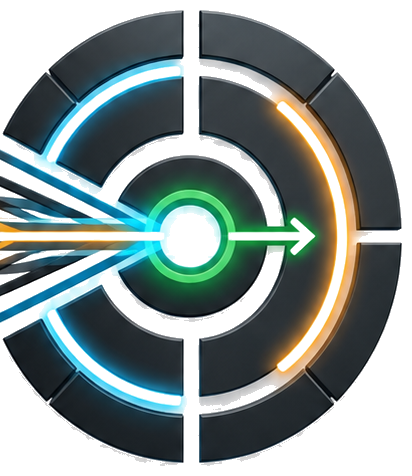

Audit
扫描安全、发布、测试、架构、UI、观测和文档治理债务。

债序天工 GitHubEnterprise Debt Remediation Skill
债序天工先审计安全、发布、测试、架构、UI、文档和治理债务，再把证据、优先级、验收方式合成一条可以交给 Codex 执行的修复目标。
Commands
Codex 里可能只显示一个 `$hz` Skill，这是正常的：`goal` 是传给 `$hz` 的模式，不是独立 Skill。
点击命令卡片可复制完整提示。
Workflow
Skill 强制先证据后结论，避免把主观“感觉乱”误当成技术债。
扫描安全、发布、测试、架构、UI、观测和文档治理债务。
按 P0-P3 排序，保留证据、影响范围和验证方式。
生成可复制到 Codex 的 `/goal`，一次性收敛修复范围。
Star Growth
README 和文档站共用同一份公开 Star History 图，方便访客快速判断项目热度。
Install
仓库内包含完整 Skill 和极简入口两个目录，两个都复制到 Codex Skills 目录即可。
$skills = "$env:USERPROFILE\.codex\skills"
Copy-Item -Recurse -Force .\enterprise-debt-remediation "$skills\enterprise-debt-remediation"
Copy-Item -Recurse -Force .\hz "$skills\hz"Adapters
平台适配层只负责入口表达，审计边界、优先级、输出格式和 `/hz goal` 语义都由核心契约约束。
`$hz audit|plan|fix|goal`，其中 `goal` 会调用 qiaomu-goal-meta-skill 的目标生成规范。
复制 `enterprise-debt-remediation/assets/adapters/claude-code/hz.md` 到命令目录。
使用 `openclaw/hz.prompt.md` 作为工作区 Prompt、命令或 Skill 入口。
使用 `hermes/hz.prompt.md` 作为命令宏或系统提示片段。